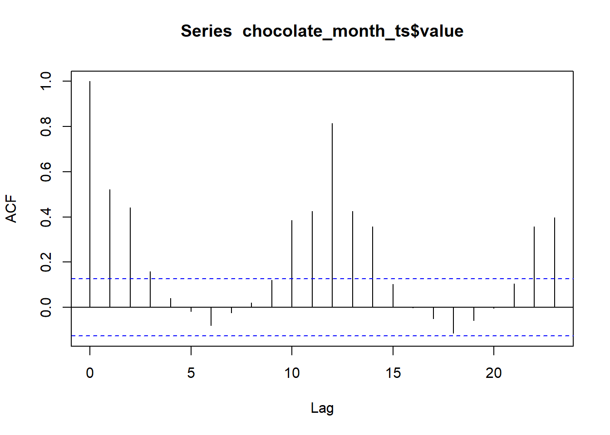
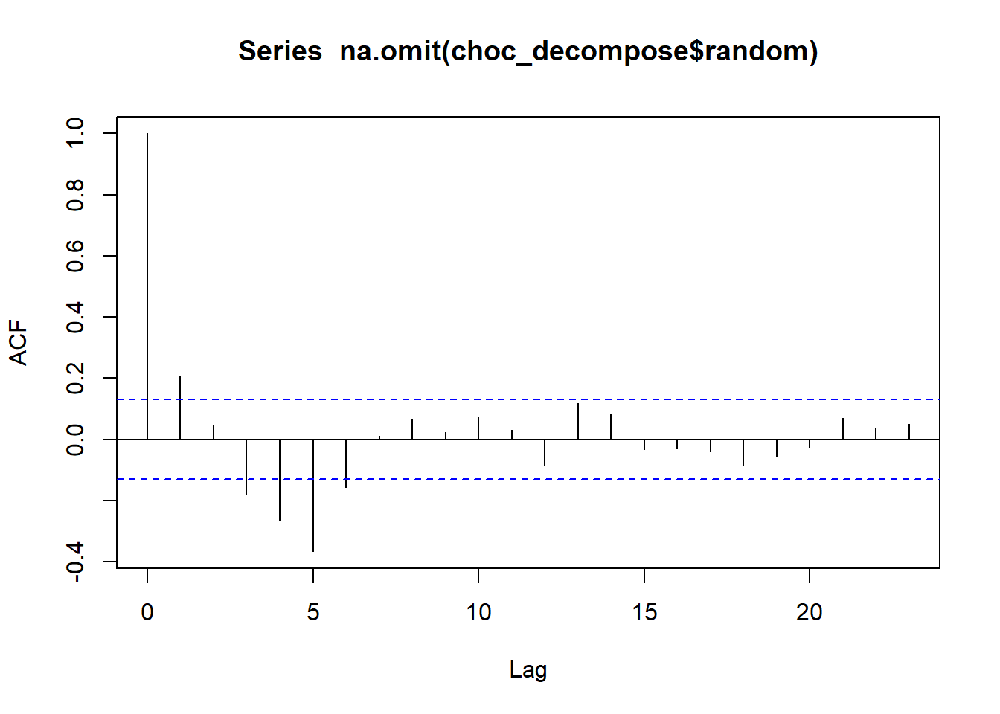

x <- c( 4.4, 4.2, 4.2, 4, 4.4, 4.7, 4.9, 5.3, 5.4, 5.5 )Chapter 2: Lesson 3
Exploration of Autocorrelation Concepts
Learning Outcomes
Explain the theoretical implications of autocorrelation for the estimation of time series statistics
- Explain how positive autocorrelation leads to underestimation of variance in short time series
- Explain how negative autocorrelation can improve efficiency of sample mean estimateInterpret correlograms to identify significant lags, correlations, trends, and seasonality
- Create a correlogram
- Interpret a correlogram
- Define a sampling distribution
- State the sampling distribution of rk
- Explain the concept of a confidence interval
- Conduct a single hypothesis test using a correlogram
- Describe the problems associated with multiple hypothesis testing in a correlogram
- Differentiate statistical and practical significance
- Diagnose non-stationarity using a correlogramPreparation
- Read Sections 2.2.5 and 2.3-2.5 (No new reading assignment)
Introduction (5 mins)
Correlograms
In the previous lesson, we used the following time series as an example. Here are the values in that time series:
- The table below gives the sample autocorrelation function, acf, for this data set. Use these values to sketch a correlogram in your Learning Journal. The figure below can help you begin.
| 0 | 1 | 2 | 3 | 4 | 5 | 6 | 7 | 8 | 9 |
|---|---|---|---|---|---|---|---|---|---|
| 1 | 0.763 | 0.448 | 0.074 | -0.237 | -0.419 | -0.47 | -0.344 | -0.226 | -0.089 |

- Are any of the autocorrelations statistically significant? If so, which one(s)?
Application: Chocolate Search Trends
Recall the Google Trends data for the term “chocolate” from the last lesson. The cleaned data are available in the file chocolate.csv.
Import the chocolate search data and convert to tsibble format
Use the code below to import the data and convert it into a time series (tsibble) object.
# load packages
if (!require("pacman")) install.packages("pacman")
pacman::p_load("tsibble", "fable",
"feasts", "tsibbledata",
"fable.prophet", "tidyverse",
"patchwork", "rio")
# read in the data from a csv and make the tsibble
# change the line below to include your file path
chocolate_month <- rio::import("../data/chocolate.csv")
start_date <- lubridate::ymd("2004-01-01")
date_seq <- seq(start_date,
start_date + months(nrow(chocolate_month)-1),
by = "1 months")
chocolate_tibble <- tibble(
dates = date_seq,
year = lubridate::year(date_seq),
month = lubridate::month(date_seq),
value = pull(chocolate_month, chocolate)
)
chocolate_month_ts <- chocolate_tibble |>
mutate(index = tsibble::yearmonth(dates)) |>
as_tsibble(index = index)
choc_decompose <- chocolate_month_ts |>
model(feasts::classical_decomposition(value,
type = "add")) |>
components()
autoplot(choc_decompose)
Here is the correlogram for the chocolate search data:
acf(chocolate_month_ts$value, plot=TRUE, type = "correlation")
Here is the correlogram for the random component of this time series:
acf(choc_decompose$random |> na.omit(), plot=TRUE, type = "correlation")
- Is there a trend in the data? If so, speculate about the cause of this trend.
- Is there evidence of seasonal variation? If so, propose an explanation for the seasonal variation.
- What do the spikes in the correlogram tell us about this time series?
- Is there evidence of autocorrelations in the data after removing the trend and seasonal variation?
- There are two exceptionally large spikes in the observed data. Can you identify a cause for these spikes?
Recap (5 mins)
- Review objectives and key points
- Review the definitions of autocovariance, autocorrelation
- Discuss autocorrelation in the time series context